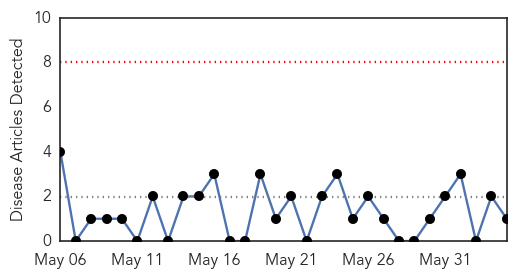
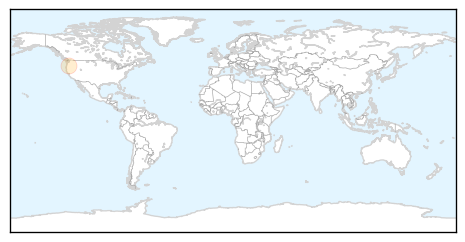
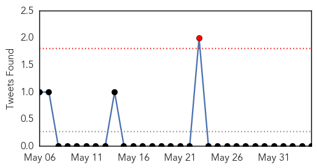

Pertussis
30-Day Web Trend
0 alerts, 0 warnings

30-Day Twitter Trend
0 alerts, 0 warnings

Article Locations
Article Confidences

Top Articles:
Top Tweets:
-
No tweets found for Jun 04, 2014
MERS
30-Day Web Trend
0 alerts, 0 warnings

30-Day Twitter Trend
1 alerts, 0 warnings

Article Locations

Article Confidences

Top Articles:
- 1.000
- Saudi Review Finds over 100 More MERS Infections — Naharnet
- 1.000
- Saudi Arabia Witnesses Major Uptick on MERS Cases
- 0.999
- Big jump in MERS cases in Saudi Arabia: Country reports 282 deaths from MERS since 2012
- 0.999
- Middle East respiratory syndrome coronavirus (MERS-CoV) – update
- 0.999
- UAE develops national Mers coronavirus plan
- 0.999
- Another Case Of MERS Infection Reported In Jordan
- 0.999
- MERS death toll in UAE hits 10
- 0.999
- Saudi review finds over 100 more MERS infections
- 0.998
- Saudi study strengthens case against camels in MERS outbreak
- 0.998
- Saudi study strengthens case against camels in MERS outbreak
- 0.998
- Saudi study strengthens case against camels in MERS outbreak
- 0.997
- Saudi study strengthens case against camels in MERS outbreak
- 0.997
- Camels confirmed as source of fatal human virus
- 0.996
- Saudi study strengthens case against camels in MERS outbreak
- 0.996
- More MERS cases cited in Saudi Arabia, Jordan
- 0.994
- Saudi MERS toll surges to 282: Ministry
- 0.994
- Mers infects 68, kills 10 in UAE Bhatkallys.com
- 0.990
- How MERS Could Topple the House of Saud, and Beyond
- 0.983
- Direct Evidence That MERS Comes From Camels
- 0.973
- Camel infection 'led to Mers death'
- 0.973
- MERS death toll surges to 282 in Saudi Arabia
- 0.958
- Review raises Saudi MERS case count 20%, death toll 48%
- 0.955
- Camels transmitted MERS to humans, but virus probably came from bats
- 0.947
- Researchers figure out way to disable a part of SARS virus
- 0.931
- Saudi Health Ministry publishes new numbers of coronavirus cases
- 0.929
- A case study shows MERS-CoV transmitted from camels to humans
- 0.886
- Saudi Health Ministry publishes new numbers of coronavirus cases
- 0.665
- PH creates task force vs infectious diseases
Top Tweets:
-
No tweets found for Jun 04, 2014